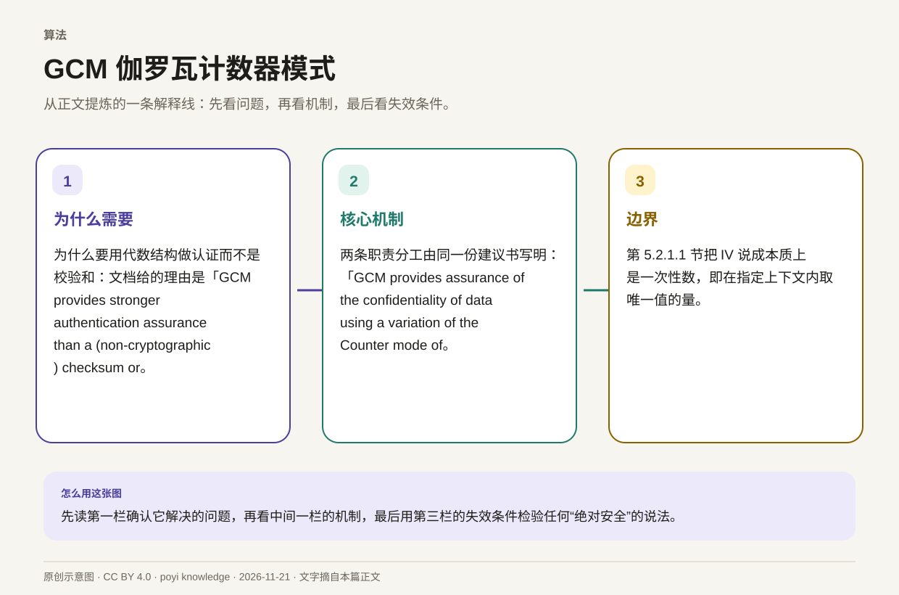
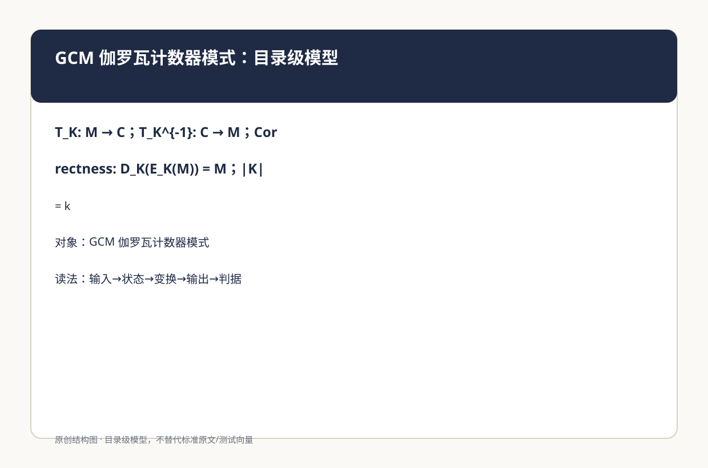

原理与机制
算法：GCM 伽罗瓦计数器模式（Galois/Counter Mode）。两条职责分工由同一份建议书写明：「GCM provides assurance of the confidentiality of data using a variation of the Counter mode of operation for encryption.」机密性走计数器模式的变体；紧随其后的句子把真实性交给定义在二元伽罗瓦域（即有限域）上的通用杂凑函数，并说这份真实性覆盖密文数据每次调用不超过约 64 吉字节——注意这个上限挂在真实性保障上，同一节随后另说，不必加密的附加数据可「of practically unlimited length per invocation」。该条目只写这份文档说到的部分：它没有给 GHASH 的乘法定义，也没有把密钥调度算作 GCM 的一部分。

为什么重要
为什么要用代数结构做认证而不是校验和：文档给的理由是「GCM provides stronger authentication assurance than a (non-cryptographic) checksum or error detecting code」，并把它分成两层——既能发现偶然的改动，也能发现恶意改动；同一段还说，输入若限定在不需要机密性的材料上，本模式就成了文档所称的 GMAC，此时它不过是对该输入的一种认证模式。也就是说，这里买到的不是更快的校验和，而是在密钥之下对伪造的抵抗。
应用与实例
用途与位置先由文档自陈：「Thus, GCM is a mode of operation of the AES algorithm.」它是 AES 的一个工作模式，而不是独立密码；同一节还声明关于 GCM 的论断同样适用于 GMAC，所以关于本模式的说法一并覆盖只做认证的那个特化。发布身份同样可查：第 2 节写着「This Recommendation has been prepared for use by federal agencies.」，紧接的一句补充非政府组织可自愿使用——前者是应用标签里 government 的依据，后者不构成行业用途的证据。基础设施那一标签只有编辑性支撑：本库应用轴词汇里可能用来打标的协议名一个都没出现——IPsec、TLS、802.11 各 grep 0 次——但文档确实在别处点了协议名，具体例子有两个——第 5.2.1.1 节网络协议里的 AAD 字段，以及附录 C 点名的「Secure Real-time Transport Protocol carrying Voice over Internet Protocol, running over User Datagram Protocol」。

边界与攻击面
限度不在算法强度上，而在使用条件上：文档给出的警告是「a breach of the requirement in Sec.8 for the uniqueness of the initialization strings may compromise the security assurance almost entirely」，并据此要求无法确保唯一性时就不要上这个模式。第 5.2.1.1 节把 IV 说成本质上是一次性数，即在指定上下文内取唯一值的量。第 8.3 节给同一把密钥的总调用次数设上限，但那是有条件的：它适用于采用「the deterministic construction with IVs whose length is not 96」或 RBG-based construction 的一切实现，只对只用 96 位确定性 IV 的实现例外。本副本把该全局上限印成 232，出版物在那里排的是上标，亦即 2 的 32 次方；同一小节接着用一支 210 台的示例设备群把这个全局数字拆成每台设备的局部限额，示例数同样丢了指数。这些数字在本副本里无一可原样引用，所以该条目只述这个约束的形状，不复述其数字。
历史与背景
技术参数与复算边界
该条目的形式模型是 (C=E_K(P;r),\qquad P=D_K(C))。输入：输入：GCM 伽罗瓦计数器模式的公开参数、密钥/随机数与消息；变量说明：P 明文，C 密文，K 密钥，r 随机化参数。 预期输出：按 GCM 伽罗瓦计数器模式 的规范执行后得到可验证的输出或可比较的优势界。 复算必须给出输入、步骤、输出和单位；示例只演示流程，不替代标准测试向量。
复杂度由密钥长度、分组/状态规模、轮数、随机数质量和敌手模型共同决定；参数越界、版本差异与实现侧信道都可能使公式结论失效。已登记限制：该条目只给出形式模型与可复算步骤，不声称已完成生产实现、侧信道认证或第三方安全评估。
逐步示例与核验
形式模型与复算步骤
[C=E_K(P;r),\qquad P=D_K(C)]
GCM 伽罗瓦计数器模式的公开参数、密钥/随机数与消息；变量说明：P 明文，C 密文，K 密钥，r 随机化参数。1.按算法规范编码输入。2.在密钥控制下执行轮函数。3.输出密文并检查长度与格式。边界：公式只覆盖已登记的参数与假设；参数取值、标准版本和实现细节仍以来源为准。
参考出处
- Wikipedia search entry for GCM 伽罗瓦计数器模式. https://zh.wikipedia.org/w/index.php?search=GCM%20%E4%BC%BD%E7%BD%97%E7%93%A6%E8%AE%A1%E6%95%B0%E5%99%A8%E6%A8%A1%E5%BC%8F
- Handbook of Applied Cryptography (Menezes, van Oorschot, Vanstone). https://www.cacr.math.uwaterloo.ca/hac/